Shoe size search for collectible sneakers
A PM asked for a size filter on sneaker searches. I traced the request to its root: eBay didn't store size as a standard. I led the fixes in order, from the seller's listing to the search page to the shopper's account, and the work became the base for how AI Mode reads size.
It started as a feature request.
As part of a larger search redesign, our PM asked for one thing: sneaker searches showed no size filter, so add one to the left rail. Before designing it, I looked at what a shopper actually saw when they typed a size.
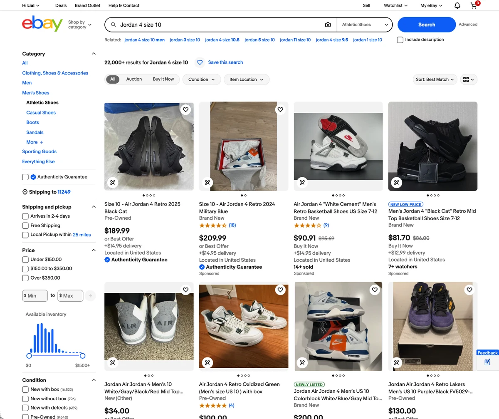
No sign the size was understood
The query said size 10. No chip, no applied filter, and the header didn't say what “22,000+ results” matched.
No way to filter by size
Category, Price and Condition were there. Size, the one detail the shopper typed, was not.
Size written 6 ways in 3 places
Shoppers had to read every title. Two top results said “Size 7-12” and never confirmed a 10 was in stock.
Men's applied without saying so
Results were scoped to men's shoes. A shopper looking for a women's 10 got the wrong pairs with no warning.
A filter can only show what the listing knows.
Size went in as free text and came out as free text. The seller knew which 10 they meant. The platform didn't. Many high-ticket sneakers sell without the Authenticity Guarantee, so nothing checked the size either. Collectible sneakers needed a sizing standard, not just a new filter.
Seller data first
The root cause sat on the selling side. Listing size needed stronger verification so it could be stored, converted and shown the same way everywhere.
Then the query
Teach search to read size intent: the number, the sizing system and the gender, so it knows what the shopper meant.
Then the display
Show size as a filter, a removable chip and one line on every card. Then remember it as a personal lens.
Every query, every filter, every card.
Before picking one design, I mapped every variant in the design file: how size could display in the filter at each level, how it could read on an item card once applied, and which filter each kind of query should present.
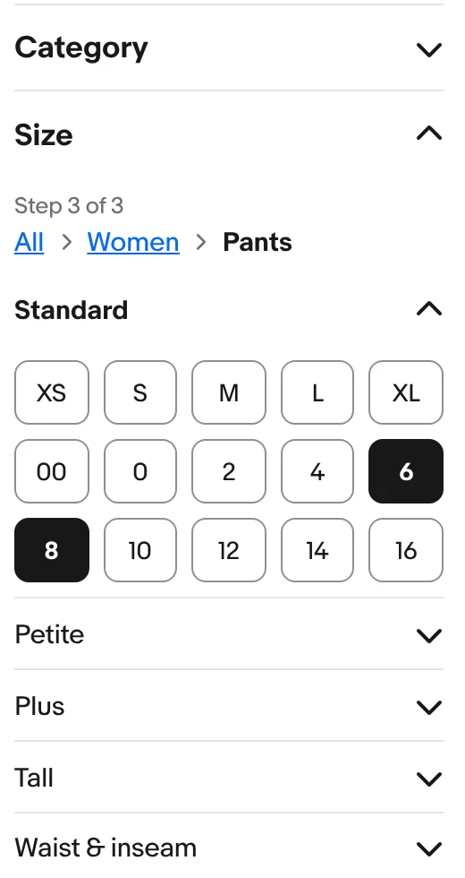
Department, then product type, then size, one step at a time in the left rail.
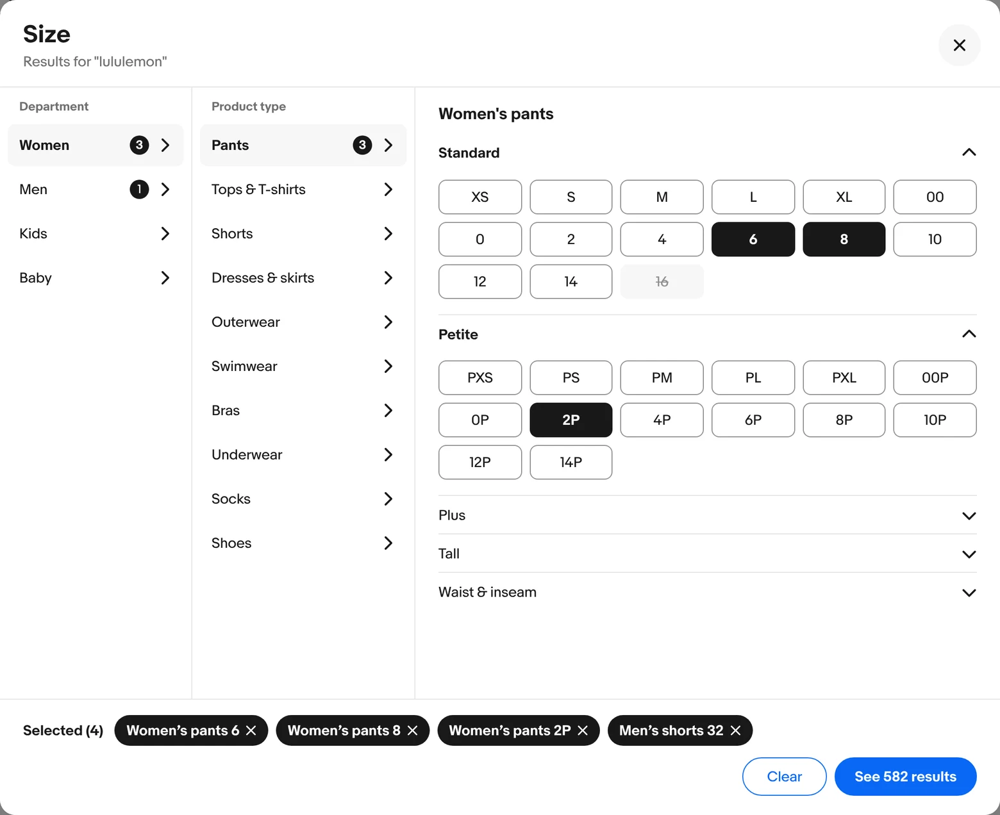
Department, product type and the size grid side by side, with every pick collected in one tray.
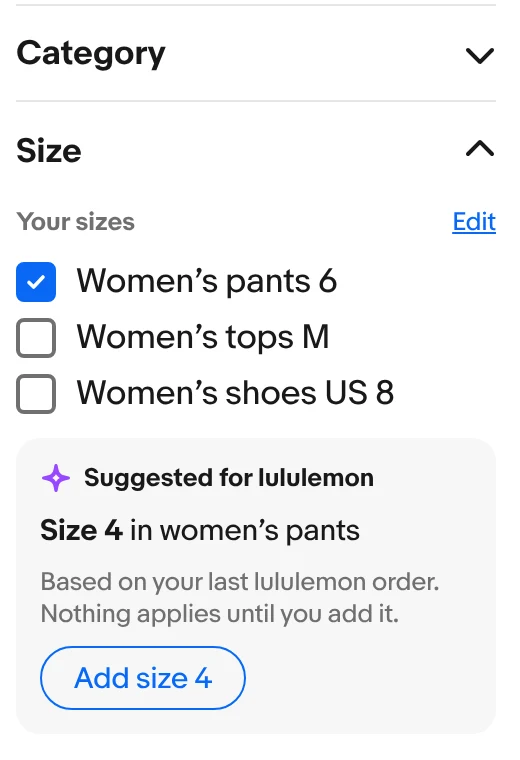
Saved sizes lead. A suggestion applies only when the shopper adds it.
I ran seven queries through each direction and through five retail patterns: Kohl's, Victoria's Secret, Nike, StockX and Nordstrom. The final design keeps one rules engine and opens a single panel from the Size chip.
A full address or nothing
The filter only stores, matches and shows a size when every part that applies is known. “6” on its own is not a size.
Where the filter opens
On the first empty part: Department, then Product type, then the size grid.
Where each part comes from
The first source that has it: the shopper's pick, words in the query, the category page, then a department holding 80% or more of results. Saved sizes only show as suggestions.
Men's and women's sizes that fit the same share a tile, so there is one grid, not two. A bare “size 10” matches two tiles, so both apply and the page asks once. An EU size applies one tile and says what it converted.
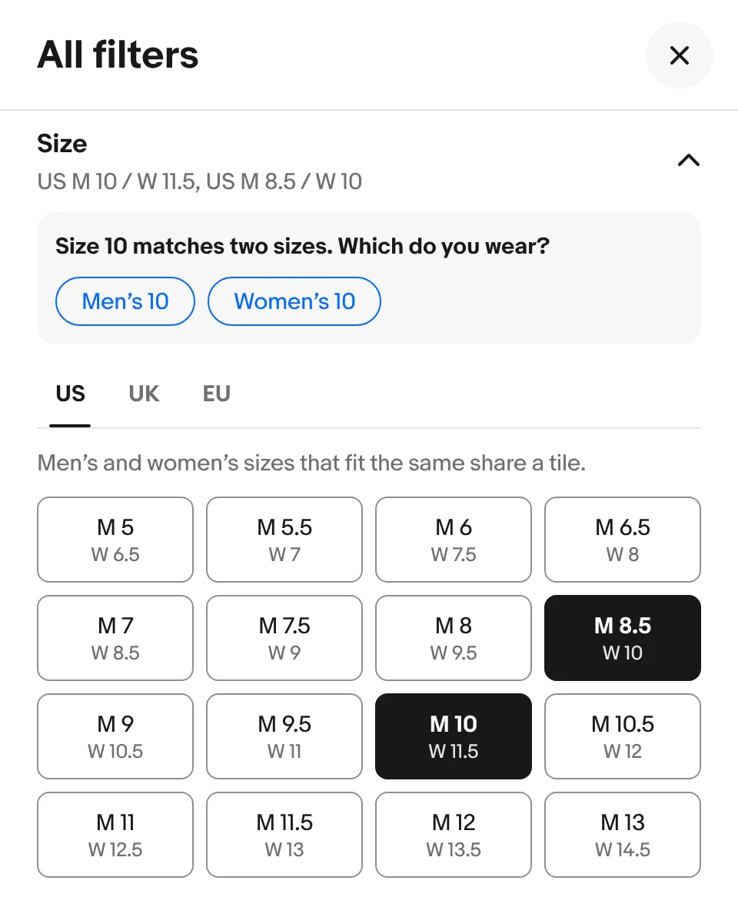
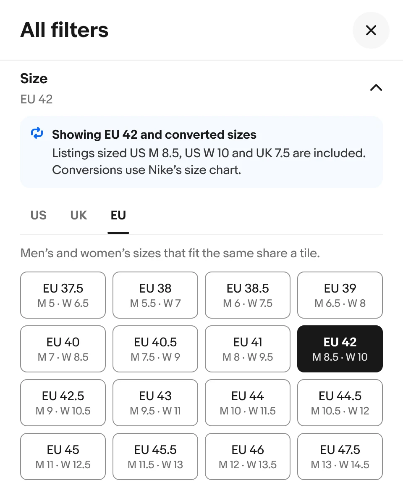
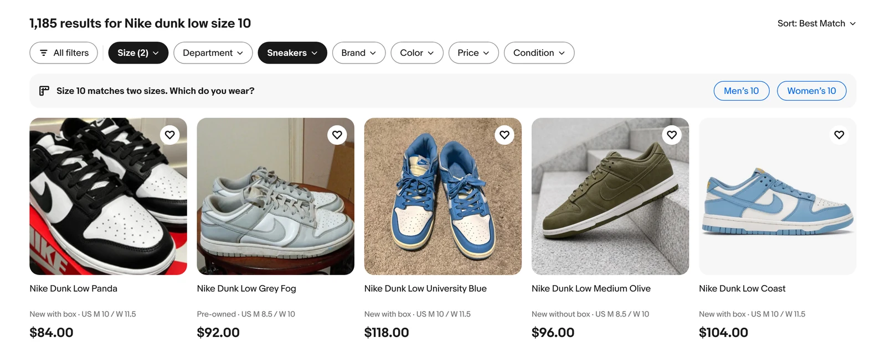
The size reads after the condition on every card, in the same terms as the chip.
From the design file. Result shares and counts there are placeholders, and shoe conversions need checking against each brand's size chart. What shipped is in section 05.
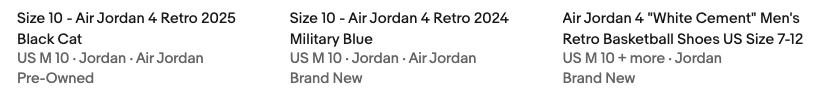
Other teams were building the same chip.
Size chips were showing up in search, in My eBay and on other surfaces, each designed by a different team. I led the decision on one chip variant, worked with Design Systems to ship it as a new component, and partnered with the My eBay team so saving a size looks like filtering by one. 8 partner teams approved the one style.
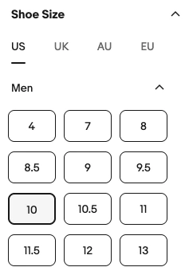
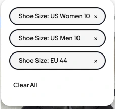
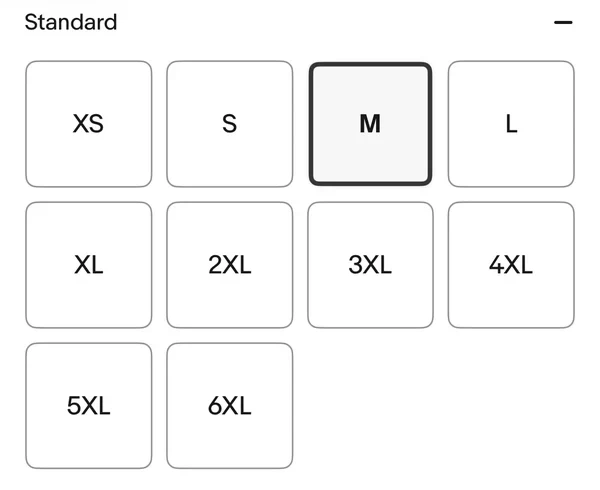
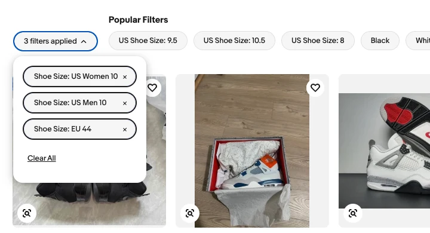
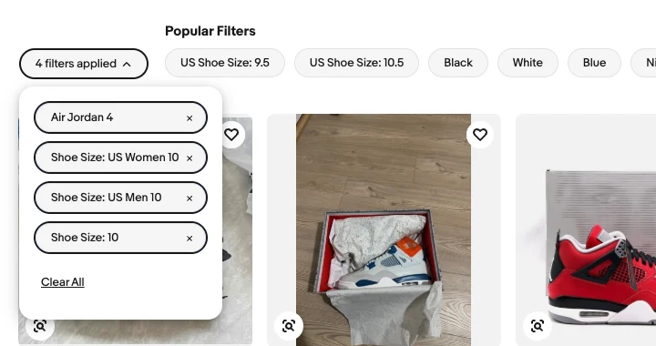
[Which state moved forward, and why]
Size became a filter shoppers can see, trust and change.
When a search includes a size, the page pulls it out, applies it, shows it as removable chips and confirms it on every card. Sizes convert in both directions, so a US search also finds listings sized in EU.
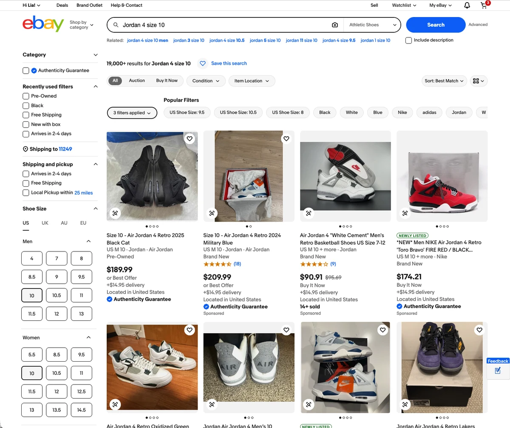
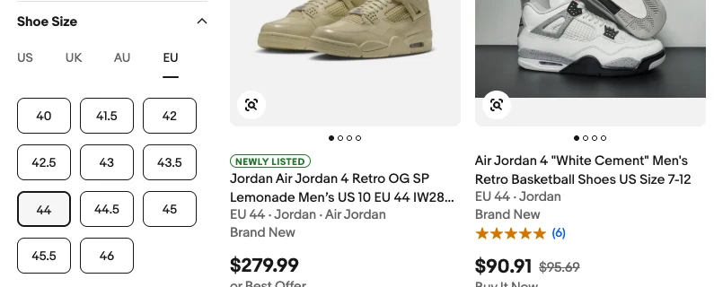
Save a size once, and search can use it.
Next, the filter became a personal lens. A shopper saves their sizes in My eBay. Saving tells eBay to apply that size when they search later, so a returning sneaker buyer starts with their size already set. [Confirm what shipped for auto-apply]
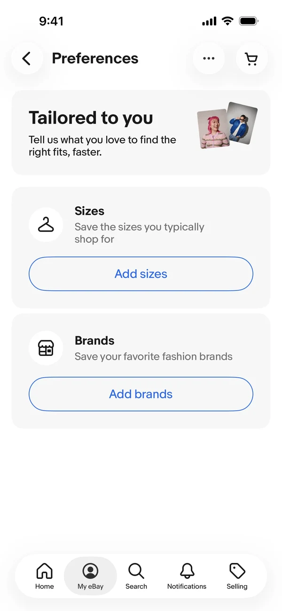
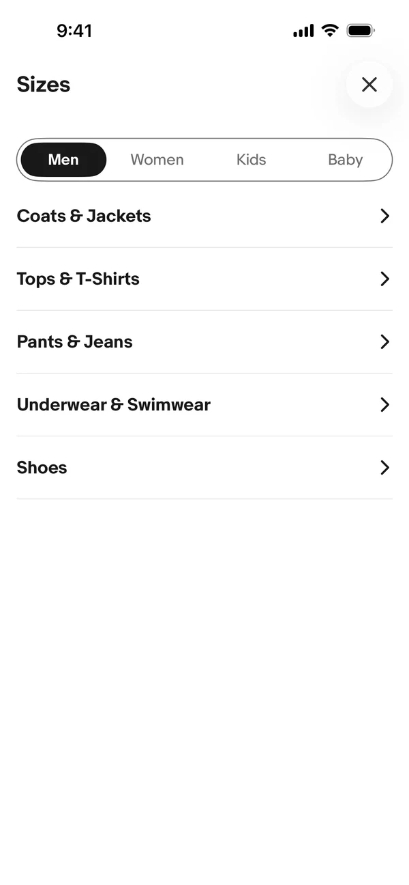
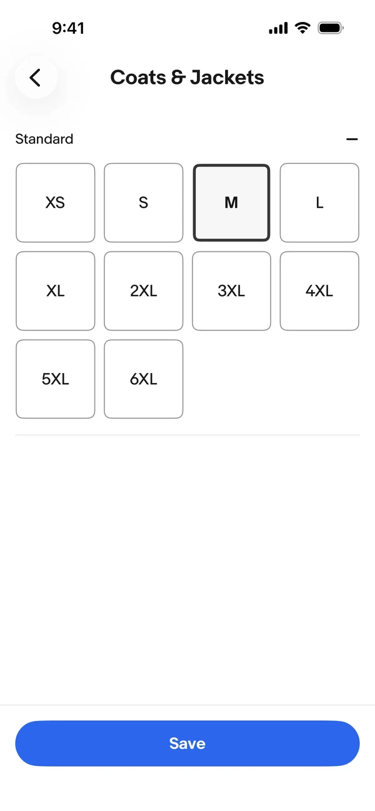
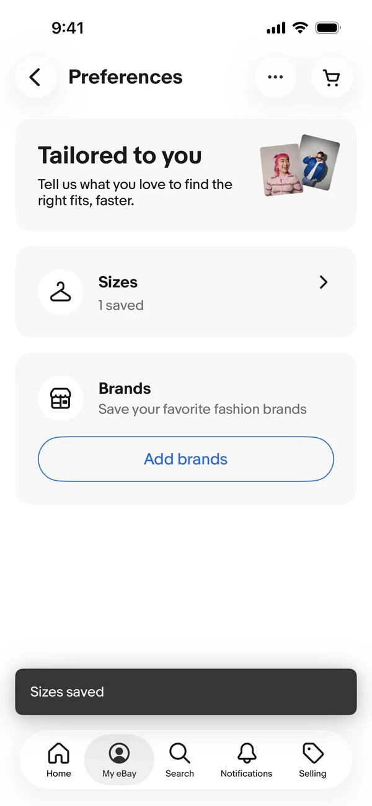
My eBay on iOS. The flow covers clothing and shoes; shown here with a jacket size.
The size fix grew into three bigger efforts.
Size was one kind of unclear intent. A query can also leave out the sizing system, the gender or the exact model. The pattern we built for size became the starting point: pull the detail from the query, apply it, show it plainly, and let the shopper change it.
Disambiguating search
How might we disambiguate search? Every detail a shopper types, not just size, should be read, applied and shown back.
AI Mode
The agent preselects what the shopper typed, asks one question only when something is still unclear, and applies saved sizes.
Read the AI Mode case study →Seller insights
When a listing isn't selling or buyers seem confused, buyers can message the seller, and the seller gets insights to fix the listing. Feedback closes the loop. [Status]
Search a shoe on eBay today, and size is there.
A shoe search now shows a Shoe Size filter with sizes by gender and region, and the size appears on every item card. What began as one filter became a sizing standard across selling, search and My eBay.